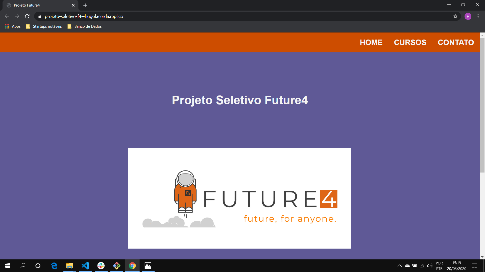
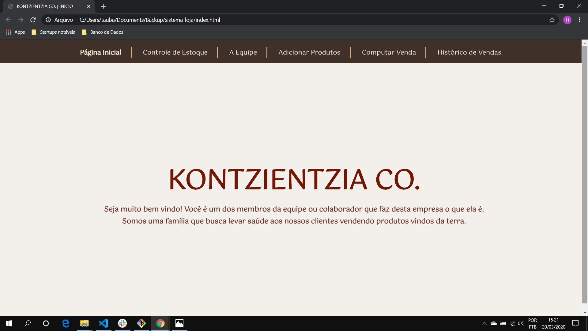

|
Olá, meu nome é
Hugo Lacerda. Sou desenvolvedor Front-end e, atualmente, estudo para fazer muito mais no mundo da tecnologia. Como posso te ajudar? |
|
Olá, meu nome é
Hugo Lacerda. Sou desenvolvedor Front-end e, atualmente, estudo para fazer muito mais no mundo da tecnologia. Como posso te ajudar? |
Em formação
Projetos
| Projeto de Seleção Future4 | Projeto de site administrativo |
|---|---|
|  |  |
Habilidades